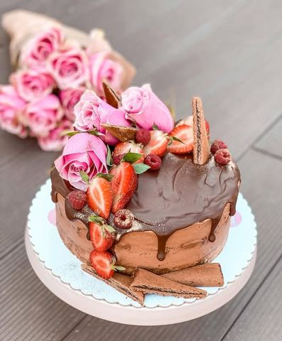

Drage moje srećan Osmi mart

Moja beleška
SačuvanoDanas vam pišem recept za jednu savršenu torticu bez pečenja, koja je toliko kremasta i čokoladna, a na sve to sadrži nove brownie lešnik @medelasrbija štrudlice 🥰 Pravi užitak!
Sastojci
- Podloga
- Fil
- Ganaš
Priprema
Sastojke za podlogu sjediniti i utisnuti u dno kalupa (moj je prečnika 22cm), pa ostaviti u frižideru na hladjenju dok se umuti fil. Marscapone sir umutiti blago mikserom, dodati mu krem, povezati, pa sipati slatku pavlaku i mutiti dok se ne dobije kremasta i stabilna smesa. Polovinu rasporediti preko podloge, pa poređati štrudluce, premazati ostatkom smese i ostaviti na hladjenju neko vreme. Za ganaš čokoladu sitno iseckati pa je preliti vrelom slatkom pavlakom, promešati i lagano prekriti površinu. Tortica gotova za tili čas! A ukus predivan 🥰 Želim da vas podstaknem i podsetim da se setite žena u svom bliskom okruženju, da im budete podrška i oslonac svaki dan. Vetar u ledja. Inspiracija. Saslušajte i učite od njih.Ne ustručavajte se da ih pohvalite, da im priteknete u pomoć i možda im baš pripremite jednu ovako predivnu torticu, što da ne..? Svaki znak pažnje je ljubav, ali onaj u koji date sebe i ostavite svoj lični pečat je ona posebna i prava ☺️ Uživajte u današnjem danu 💐
Originalni opis sa Instagrama
Drage moje srećan Osmi mart 💐🌸💓 Danas vam pišem recept za jednu savršenu torticu bez pečenja, koja je toliko kremasta i čokoladna, a na sve to sadrži nove brownie lešnik @medelasrbija štrudlice 🥰 Pravi užitak! Podloga: •300 gr mlevenog keksa •100 gr mlevenog pečenog lešnika •50 gr nugat krema •125 gr @vitalsrbija margarina sa ukusom slatke pavlake •120 ml mleka Fil: •500 gr mascarpone sira •500 gr nugat krema sa seckanim lešnikom •200 ml slatke pavlake •10ak štrudlica Ganaš: •150 gr mlečne čokolade •75 ml slatke pavlake Sastojke za podlogu sjediniti i utisnuti u dno kalupa (moj je prečnika 22cm), pa ostaviti u frižideru na hladjenju dok se umuti fil. Marscapone sir umutiti blago mikserom, dodati mu krem, povezati, pa sipati slatku pavlaku i mutiti dok se ne dobije kremasta i stabilna smesa. Polovinu rasporediti preko podloge, pa poređati štrudluce, premazati ostatkom smese i ostaviti na hladjenju neko vreme. Za ganaš čokoladu sitno iseckati pa je preliti vrelom slatkom pavlakom, promešati i lagano prekriti površinu. Tortica gotova za tili čas! A ukus predivan 🥰 Želim da vas podstaknem i podsetim da se setite žena u svom bliskom okruženju, da im budete podrška i oslonac svaki dan. Vetar u ledja. Inspiracija. Saslušajte i učite od njih.Ne ustručavajte se da ih pohvalite, da im priteknete u pomoć i možda im baš pripremite jednu ovako predivnu torticu, što da ne..? Svaki znak pažnje je ljubav, ali onaj u koji date sebe i ostavite svoj lični pečat je ona posebna i prava ☺️ Uživajte u današnjem danu 💐 • • • #tortabezpecenja #kremastatorta #cokolesniktorta #domacetortice #idejezadezert #osmimart #iznenađenje #uzivajudanu #internacionalwomensday